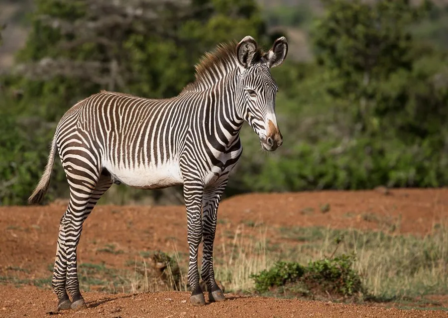

哺乳动物 · 动物界
细纹斑马 Equus grevyi

现存体型最大的斑马，条纹细密、腹部为白色，耳朵大而圆，栖息于非洲之角的干旱草原，因数量锐减被列为濒危。
- 分类
- 门脊索动物门纲哺乳纲目奇蹄目科马科属马属
- 栖息环境
- 肯尼亚北部和埃塞俄比亚的干旱草原、灌丛与半荒漠
- 地理分布
- 肯尼亚北部与埃塞俄比亚的干旱地区，为非洲之角特有种群
- 保护级别
- IUCN 濒危（EN）
物种志
细纹斑马体长 2.5–2.75 米，肩高 1.45–1.6 米，体重 350–450 kg，是现存体型最大的斑马。它的条纹比其他斑马更细更密，背部条纹延伸到臀部，腹部为白色；耳朵大而圆，四肢细长，蹄窄，适合在干旱草原上长途迁徙。
细纹斑马分布于肯尼亚北部和埃塞俄比亚的干旱草原、灌丛和半荒漠，是非洲之角的特有种群。它以草和灌木为食，与其它斑马不同，成年雄性占有较大领地并独占水源附近的交配权，雌性带着幼驹在领地间自由活动。细纹斑马能长时间不饮水，可在干旱环境中迁徙寻找草场。雌性妊娠期约 13 个月，每胎 1 仔。由于盗猎、栖息地退化和水源竞争，细纹斑马数量从数万只锐减至约 2000–3000 只，被列为濒危。
形态与习性
- 食性草与灌木
- 体长2.5–2.75 m，肩高 1.45–1.6 m
- 体重350–450 kg
- 寿命野外约 20 年
- 繁殖妊娠期约 13 个月，每胎 1 仔
- 条纹细密条纹延伸至臀部，腹部为白色
- 社会结构雄性占有领地，雌性自由活动
趣味知识
- 细纹斑马是现存体型最大的斑马，条纹比其它斑马更细密。
- 它的腹部是白色的，与身体两侧的条纹形成对比。
- 细纹斑马能长时间不饮水，适应干旱草原生活。
- 全球细纹斑马仅剩约 2000–3000 只，被列为濒危。
生态关系
- 捕食 ← 狮子 草原上的典型捕食关系